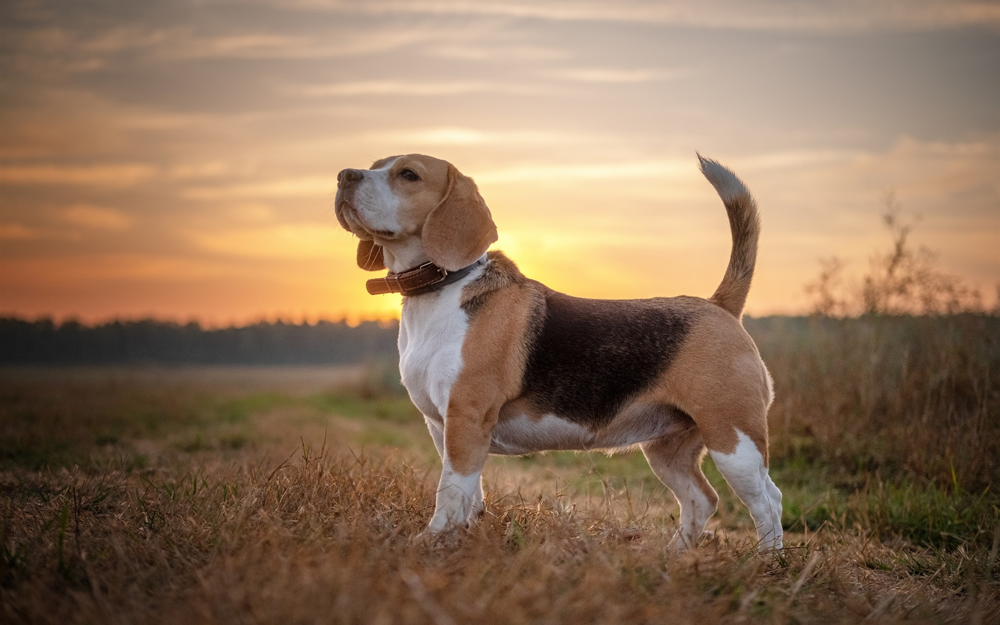

Proyecto Barbería Alura
Este es un proyecto realizado en el programa de educación de Oracle Next Education. Se simula una página web de una barbería que cuenta con 3 páginas: Index, productos y contacto.
Es el resultado de los cursos de HTML y CSS parte 1, 2, 3 y 4 de Alura.

Proyecto responsive con temática animales
Este es un proyecto realizado para entender como funciona una página web responsive. Se simula una página web acerca de los animales y se toma en cuenta como se vería la página en los distintos tamaños de pantallas, logrando siempre adaptar todo en cada una de ellas. Las medidas tomadas en cuenta son: De una pantalla de celular, de tablet y de monitor.

Proyecto encriptador
Este es un proyecto realizado en el programa de educación de Oracle Next Education. Se crea una página con un formulario en donde la persona puede ingresar un texto que desee y encriptarlo. También se da la posibilidad de copiar ese texto encriptado y desencriptarlo.
Es el resultado del challenge de Alura. El diseño es responsive, así que se acopla perfectamente a los distintos tamaños de pantallas.